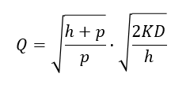

Definición.
El modelo está diseñado para productos estables (productos que pueden venderse por tiempo indefinido) en oposición a los productos perecederos (se venden sólo durante un lapso muy corto).
Está diseñado para un sistema de inventario de revisión contínua, porque supone que el nivel de inventario se supervisa todo el tiempo de modo que puede colocarse un nuevo pedido tan pronto como el nivel de inventario baje al punto de reorden, contrario al sistema de inventarios de revisión periódica, donde el nivel de inventario sólo se revisa cada cierto período, como al final de cada semana.
El método tradicional para implantar un sistema de inventarios de revisión contínua es un sistema de dos contenedores.
Todas las unidades de un producto en particular se colocan en dos contenedores. La capacidad de un contenedor equivale al punto de reorden.
Primero, se retiran las unidades del otro contenedor. Entonces, cuando se vacía este segundo contenedor, se pone en marcha colocar un pedido nuevo.
Durante el tiempo de entrega hasta recibir este pedido, las unidades se retiran del primer contenedor.
En los últimos años, el sistema de dos contenedores se ha reemplazado por sistemas de inventarios computarizados.
Cada adición al inventario y cada venta que ocasiona un retiro se registran en forma electrónica, de modo que siempre está disponible el nivel actual del inventario en la computadora.
Por lo tanto, las computadoras generan un nuevo pedido en cuanto el nivel del inventario llega al punto de reorden.

Justificación.
Debido al uso extenso de las computadoras para la administración moderna de inventarios, los sistemas de inventarios de revisión contínua se usan cada vez más para productos estables con la importancia suficiente para justificar una política de inventarios formal.
- Un sistema de revisión contínua de inventarios para un producto estable dado por lo común estará basado en dos variables críticas:
- Para un fabricante que maneja su inventario de productos terminados, la orden será para una corrida de producción de tamaño Q.
- Para un mayorista o detallista (o para un fabricante que reabastece su inventario de materia prima de un proveedor), la orden será un pedido de compra de Q unidades del producto.
- Una política de inventarios basada en estos dos números críticos es sencilla.
R = punto de reorden
Q = cantidad a ordenar
Política de inventario.
«Cada vez que el nivel del inventario del producto baja a R unidades, coloca una orden de Q unidades para reabastecer el inventario.»
Esta política con frecuencia se llama política de punto de reorden, cantidad a ordenar o abreviado, política (R, Q), (En consecuencia, se podría hacer referencia al modelo completo como el modelo (R, Q)).
También se usan otras variaciones de estos nombres, como política (Q, R), modelo (Q, R).
Suposiciones del modelo.
- Cada aplicación involucra un solo producto estable.
- El nivel de inventario está bajo revisión contínua, por lo que su valor actual siempre se conoce.
- Ha de usarse una política (R, Q), y las únicas decisiones que se toman son los valores de R y Q.
- Hay un tiempo de entrega entre colocar la orden y recibir la cantidad del pedido. El tiempo de espera puede ser fijo o variable.
- La demanda para retirar unidades del inventario para venderlas (o cualquier otro propósito) durante este tiempo de entrega es incierta. Sin embargo, se conoce su distribución de probabilidad (o al menos se puede estimar).
- Si ocurre un faltante antes de recibir el pedido, la demanda excedente es un pedido pendiente, que se surte cuando llega la orden.
- Se incurre en un costo de preparación (denotado por K) cada vez que se coloca una orden.
- Excepto por este costo de preparación, el costo de la orden es proporcional a la cantidad a ordenar Q.
- Se incurre en cierto costo de mantener (denotado por h) por cada unidad en el inventario por unidad de tiempo.
- Cuando ocurre un faltante, se incurre en cierto costo por faltantes (denotado por p) por cada unidad pendiente de entrega por unidad de tiempo hasta que se surte el pedido.
Similitud con otros modelos.
Este modelo también está relacionado de cerca con el modelo EOQ con faltantes planeados.
De hecho, todas las suposiciones también son consistentes con este modelo, a excepción de la suposición 5: en lugar de tener una demanda incierta, este modelo supone una demanda conocida con una tasa fija.
Debido a la relación cercana entre estos dos modelos, sus resultados deben ser muy parecidos.
Selección de la cantidad a ordenar Q.
El enfoque más directo para seleccionar Q para el modelo actual es simplemente usar la fórmula dada para el modelo EOQ con faltantes planeados.
Tal fórmula es la siguiente:

Donde D es la demanda promedio por unidad de tiempo y K, h y p están definidas en las suposiciones 7, 9 y 10, respectivamente.
Esta Q sólo será una aproximación de la cantidad óptima a ordenar para el modelo actual.
Selección del punto R de reorden.
Un enfoque común para elegir el punto de R es basarlo en el nivel de servicio que la administración desea para los clientes.
Así, el punto de inicio es obtener una decisión administrativa acerca del nivel del servicio.
Medidas alternativas del nivel de servicio.
- La probabilidad de que no ocurra un faltante entre el tiempo en que se coloca una orden y en que se recibe, (Ésta es la definición usada para el modelo de inventarios de productos perecederos).
- El número promedio de faltantes por año.
- El porcentaje promedio de la demanda anual que puede satisfacerse de inmediato (sin faltantes).
- El retraso promedio en el surtido de los pedidos pendientes cuando ocurre un faltante.
- El retraso promedio total en el llenado de pedidos (donde el retraso sin un desabasto es 0).
Relaciones entre las medidas.
Las medidas 1 y 2 están muy relacionadas.
Por ejemplo, supongamos que la cantidad a ordenar Q se ha establecido en 10% de la demanda anual, de modo que coloca un promedio de 10 pedidos anuales.
Si 0.2 es la probabilidad de que ocurra un faltante durante el tiempo de entrega hasta que se recibe el pedido, entonces el número promedio de faltante por año sería 10(0.2)=2.
Más relaciones entre las medidas.
Las medidas 2 y 3 también se relacionan.
Por ejemplo, supongamos que ocurre un promedio de dos faltantes por año y que la duración promedio de un faltante es de nueve días.
Puesto que 2(9)=18 días de faltante por año son en esencia 5% del año, el promedio porcentual de la demanda anual que puede satisfacerse de inmediato sería 95%.
Adicionalmente, las medidas 3, 4 y 5 están relacionadas.
Por ejemplo, supongamos que el promedio porcentual de la demanda anual que puede satisfacerse de inmediato es 95% y que el retraso promedio para surtir los pedidos pendientes cuando ocurre un faltante es cinco días.
Como sólo 5% de los clientes incurren en este retraso, el retraso promedio global para surtir los pedidos sería 0.05(5)=0.25 días por orden.
Se requiere tomar una decisión administrativa acerca del valor deseado de al menos una de estas medidas del nivel de servicio.
Después de seleccionar una de ellas para centrar la atención, es útil explorar las implicaciones de varios valores alternativos de esta medida sobre algunas de las otras medidas antes de elegir la mejor alternativa.
Tal vez, la medida 1 es la más conveniente como medida principal, de modo que se centrará la atención en este caso. El nivel de servicio deseado para esta medida se denotará por L, así:
L = probabilidad deseada por la administración de que no un faltante entre el tiempo en que se coloca un pedido y se la cantidad ordenada.